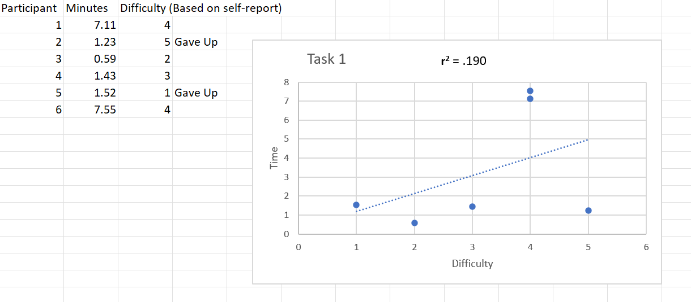

Asking Participants difficulty of Task
How difficult was sending a message using Canvas?
The difficulty of the task is shown to be spread across the rating

How difficult was doing the to-do task for specific class?
How difficult was finding APA 7th referencing in library?

How difficult was using Canvas to book PC and Study Room?

Scenario
We are looking at the difference between the time taken with a particular task and the self-reported difficultly of said task.
Task 1
For task 1, we noticed that participants 1 and 6 took the longest amount of time but reported the task to be 4, not a difficult of 5. This is due to the participants giving up on the task and accidentally finding it as they were trying to complete the other tasks. Participant number 2 and 5 however, can be seen to have given up completely, with participant 2 rating the task a 5, and was not able to stumble upon it while doing the tasks. Participant number 5 gave a rating of 1, he stumbled upon the inbox and realised how to complete the task but never tried doing it, but still gave it a 1 during the interview afterward.
Task 2
Task 2 creating a to-do task on calendar shows that all participants were able to accomplish the task with speed and reported as not difficult except participant 1.

Task 3
In task 3 all participants reported the task difficultly to be lower than a 3 and with a much lower time completion.

Task 4
Only participant number 2 was able to accomplish the task, every other participant gave up. Participant number 1 spent the longest in trying to achieve the task, whereas the other participants that could not accomplish the task gave up after a few minutes. Participant number 2 said, “I think I saw it earlier” while he was doing his exploration of Canvas. Because he accidentally stumbled upon it during his exploration, he was able to quickly complete this task.